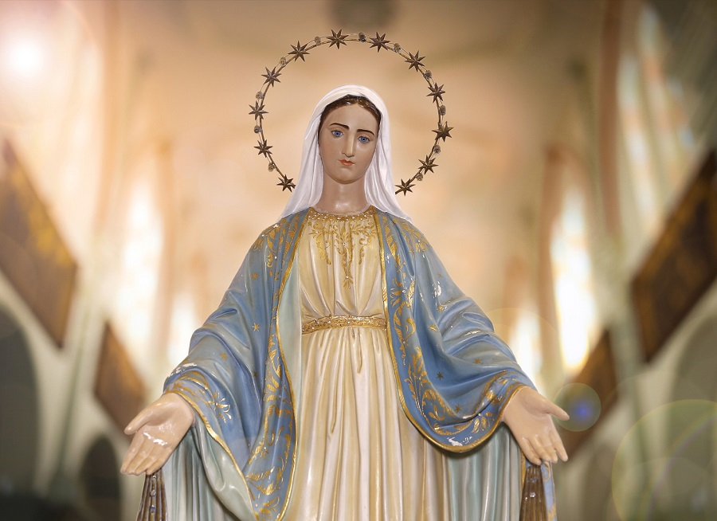
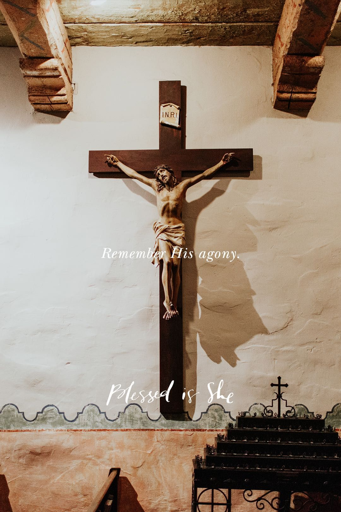

Alabanzas y Cantos Inspiracionales
Cantante, compositor, interprete; originario de Bolivia.
Descubre mis canciones exclusivas en Spotify y YouTube. Disfruta de los sonidos y déjate envolver por el ritmo.
Canto de entrada
Cantos para la Comunión
Cantos de ofertorio

Cantos a la virgen

Cantos de Salida
Cantos de Animación